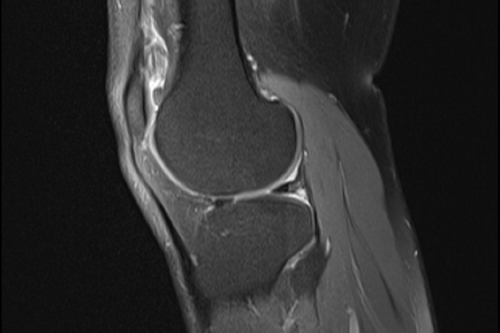

Knee Abnormality Detection - Twelve MRI Findings with One CoAtNet Model
A solution for the RSNA Knee Abnormality Detection competition on Kaggle: one CoAtNet model reads a knee MRI study, DICOM series in three planes, and scores twelve clinically important findings at once. 0.924 macro-averaged ROC AUC on the public leaderboard, single model, no ensembling or test-time augmentation.
Keywords

1. Introduction
The knee is the most imaged joint, and one MRI study can hold a dozen different problems: ligament tears, meniscal damage, cartilage loss, fractures, effusion. Radiologists are scarce and do not always agree, so the competition asks for a model that scores every finding at once. My entry reads each study's DICOM series in three planes, fixes them into a five-slot slice stack so every study has the same shape, and passes the stack through one CoAtNet backbone with a separate attention head per finding. It had to run inside a Kaggle notebook with no internet and under nine GPU hours.
2. Goal
Goal
- Score all twelve findings from one model and one forward pass per study.
- Handle the real data as it comes: mixed DICOM transfer syntaxes, varying slice counts and resolutions, several scanner sites.
- Stay inside the competition limits of a single notebook, no internet and nine GPU hours, with no ensembling.
3. Code and details on GitHub
The main project and its technical details are uploaded to GitHub, so please refer to the repository to understand the work in detail.
Kaggle notebook: https://www.kaggle.com/code/laudari/notebook247d4dbb42
무릎 이상 탐지 - CoAtNet 모델 하나로 MRI 소견 12가지
Kaggle의 RSNA 무릎 이상 탐지 대회 솔루션이에요. CoAtNet 모델 하나가 무릎 MRI 검사, 세 평면의 DICOM 시리즈를 읽고 임상적으로 중요한 소견 12가지를 한 번에 점수화해요. Public Leaderboard 매크로 ROC AUC 0.924, 단일 모델, 앙상블과 TTA 없이요.
키워드
1. 소개
무릎은 가장 많이 촬영하는 관절이고, MRI 검사 하나에 다른 문제가 열두 가지씩 들어 있을 수 있어요. 인대 파열, 반월상연골 손상, 연골 소실, 골절, 삼출이요. 영상의학과 의사는 부족하고 판독이 늘 일치하지도 않아서, 대회는 모든 소견을 한 번에 점수화하는 모델을 요구해요. 제 출품작은 검사마다 세 평면의 DICOM 시리즈를 읽고, 모든 검사가 같은 모양이 되도록 5개 슬롯의 슬라이스 스택으로 고정한 뒤, 소견마다 Attention Head가 따로 있는 CoAtNet Backbone 하나에 넣어요. 인터넷 없이, GPU 9시간 안에, Kaggle 노트북 안에서 돌아가야 했어요.
2. 목표
목표
- 검사마다 모델 하나, 순전파 한 번으로 소견 12가지를 모두 점수화해요.
- 실제 데이터를 오는 그대로 다뤄요. 섞인 DICOM 전송 구문, 다른 슬라이스 수와 해상도, 여러 촬영 기관이요.
- 노트북 하나, 인터넷 없음, GPU 9시간이라는 대회 제한 안에서, 앙상블 없이 해요.
3. 코드와 자세한 내용은 GitHub에
메인 프로젝트와 기술적인 세부 내용은 GitHub에 올려 두었어요. 작업을 자세히 이해하시려면 저장소를 참고해 주세요.
Kaggle notebook: https://www.kaggle.com/code/laudari/notebook247d4dbb42